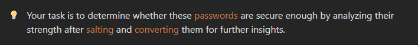
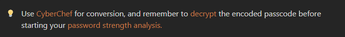
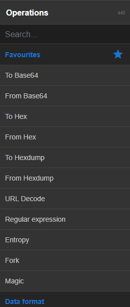
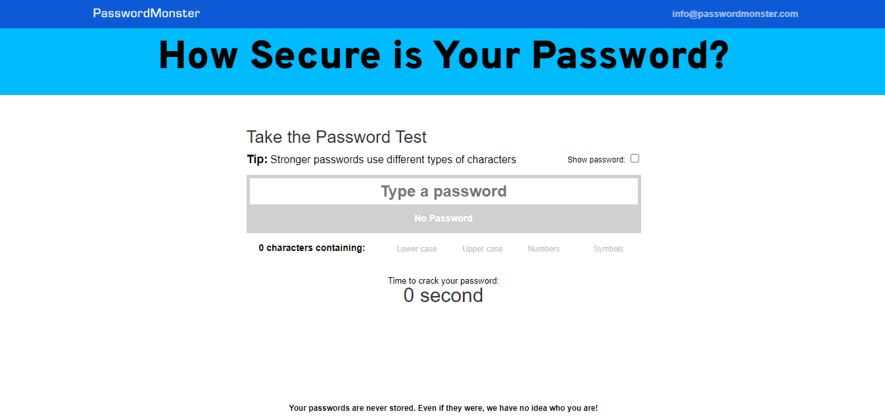

Xploit
HomeIntroduction:
Passwords are often the last line of defense when securing personal and confidential data. However, many users still rely on weak passwords, making their data vulnerable. In this challenge, you'll examine the use of password salting and learn how to enhance password security.
Scenario:
A list of encrypted passwords has been found in a file named Pass.txt. To secure these passwords, the organization has implemented password encryption. Your task is to determine whether these passwords are secure enough by analyzing their strength after salting and converting them for further insights.
Objective:
- Evaluate password security: Analyze the encrypted passwords in Pass.txt using password-cracking techniques and tools to determine if the passwords are strong enough.
- Convert and check the strength: Use CyberChef to convert the passwords and evaluate their strength using an online password checker tool.
Skills Required:
- Password encrypting: Understand how password encrypting works to enhance password security in differen encryption algorithms.
- Password Strength Analysis: Use online tools like Password Monster to analyze and check the strength of the converted passwords.
- Envryption Cracking: Familiarity with encryption cracking / decryption methods and conversion tools like CyberChef.
How to Play:
- Get the Password File: Download the Pass.txt file containing the encrypted passwords.
- Convert Using CyberChef: Use CyberChef to convert the encryted passcodes into readable format for analysis.
- Check Password Strength: Once converted, visit Password Monster to check the strength of the passwords.
- Submit the Flag: The flag will be found in the strongest password after analysis.
- Flag Format: The flag will be in the following format "flag{this_is_your_flag} ".
Hint:
Let's better understand the process of passcode dececoding and how it is to be done:
On accessing CyberChef you will be greeted with this console, thhe console is divided into 4 parts namely:
- Operations
- Recipe
- Input
- Output
Here the Operations tab has a variety of both encryptions and decryption algorithms that can be used to encode or decode the data, you can use this by simply dragiing and dropping the required algorithm into the Recipe section.
Once you have added the algorithms in the Recipe section you can now enter the "password" in the Input section and click on "Bake".
Now that you have the decrypted message, you can check its effictiveness and strendth using the Password Monster tool.
Red Flags to Watch Out For:
- Weak Passwords: Passwords containing simple patterns like "123456" or "password123" are especially vulnerable.
- Improper Decryption: If password decrption is improperly implemented on CyberChef, even encrypted passwords can be cracked with ease.
- Password Cracking: Be aware of common tools like Password Monster, which can be used to identify the effectiveness of the password.
Conclusion:
This challenge aims to deepen your understanding of password security through salting and password strength analysis. By securing your passwords with proper salting techniques, you can significantly reduce the risk of compromise.